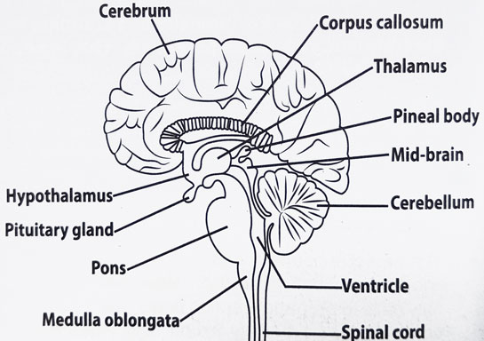
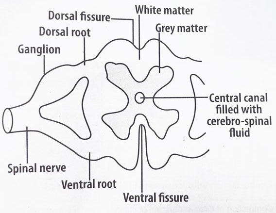

Learning Objectives
By the end of this lesson, you should be able to:
- Describe the location and structure of the brain
- Draw and label a diagram of the longitudinal section of the mammalian brain
- Describe the structure of the spinal cord
- Explain the functions of the brain and spinal cord
- Explain how the brain and spinal cord are protected
- Describe the functions of cerebrospinal fluid
- Define cranial and spinal nerves and differentiate between them
Location and Structure of the Brain
- The brain is located within a bony skull or cranium, which protects it.
- The brain consists of two distinct regions: grey matter and white matter. The grey matter forms the surface of the brain, while the white matter is located beneath it.
The grey matter contains cell bodies and dendrites, while the white matter contains axons.
- Within the brain are four interconnecting chambers called ventricles. These ventricles are filled with cerebrospinal fluid (CSF)
, which provides cushioning and nourishment to the brain.

Diagram of the human brain
Parts of the brain and their functions
The brain is divided into three main parts: the forebrain, the midbrain, and the hindbrain.
- Forebrain: This is the largest part of the brain and includes the cerebrum (left and right cerebral hemispheres), thalamus and hypothalamus.
- The cerebrum is responsible for higher cognitive functions such as intelligence, thinking, learning, memory, consciousness and all voluntary movements.
- The thalamus relays sensory information to the forebrain and hindbrain.
- The hypothalamus has functions related to homeostasis such as osmoregulation, regulation of body temperature and carbon dioxide levels in blood, etc. It also controls thirst, appetite and sleep. It produces hormones such as antidiuretic hormone (ADH) and oxytocin.
- Midbrain: It is involved in processing visual and auditory information and controlling eye movements.
- Hindbrain: It includes the cerebellum, Pons and medulla oblongata.
- The Cerebellum coordinates skeletal muscle movement and balance (posture)
- The Pons connects the cerebellum to the medulla oblongata.
- The medulla oblongata regulates vital functions such as breathing rate, heart rate, contraction and dilation of blood vessels, blood pressure, peristalsis, etc.
Structure of the Spinal Cord
- The spinal cord is a long, thin, tubular structure that extends from the brainstem to the lumbar region of the vertebral column.
- It is protected by the vertebrae
- In transverse section, the spinal cord consists of two identical halves fused together. The two halves enclose a small canal called spinal canal, which is filled with cerebrospinal fluid.
- The outer layer is made up of white matter, which contains myelinated axons while the inner layer is made up of grey matter, which contains cell bodies and dendrites.
Functions of the Spinal Cord
The spinal cord is responsible for transmitting nerve impulses between the brain and the rest of the body.

Diagram of the transverse section of the spinal cord
Protection of the Brain and Spinal Cord
The brain and spinal cord are protected by several structures:
- The skull protects the brain, while the vertebrae protect the spinal cord.
- Three layers of connective tissue called the meninges surround and protect the brain and spinal cord.
- Cerebrospinal fluid acts as a shock absorber, preventing mechanical damage to the brain and spinal cord.
- Cerebrospinal fluid also contains lymphocytes and other immune cells that protect the central nervous system from infection.
Other functions of cerebrospinal fluid
- It helps to maintain a stable environment for the neurons and glial cells in the central nervous system by regulating the composition of the extracellular fluid.
- It removes metabolic waste products from the central nervous system.
- It supplies nutrients throughout the central nervous system.
- It provides information about the state and health of the central nervous system and thus can be used for diagnostic purposes.
Cranial and spinal nerves
Cranial Nerves
Cranial nerves emerge from the brain and primarily serve the head and neck region. Humans have 12 pairs of cranial nerves, each with specific functions.
Spinal Nerves
Spinal nerves emerge at intervals along the length of the spinal cord through openings between two successive vertebrae. Humans have 31 pairs of spinal nerves.
Each spinal nerve divides into two roots (dorsal and ventral roots) before it joins the spinal cord.
- The dorsal root joins the dorsal part of the spinal cord and contains only sensory neurons. The cell bodies of sensory neurons aggregate in a small swelling known as dorsal root ganglion. The axon ends in the grey matter of the spinal cord.
- The ventral root is attached to the ventral part of the spinal cord. It contains only motor neurons. The cell bodies of these neurons lie in the grey matter of the spinal cord and their axons leave the spinal cord through the ventral root and end at the skeletal muscles.
Summary
The brain and spinal cord are the main components of the central nervous system. The brain is responsible for processing sensory information, coordinating movement, and regulating bodily functions, while the spinal cord serves as a communication pathway between the brain and the rest of the body.
Both the brain and spinal cord are protected by structures such as the skull, vertebrae, meninges, and cerebrospinal fluid.
In humans, there are 12 pairs of cranial nerves that emerge from the brain and primarily serve the head and neck region, while 31 pairs of spinal nerves emerge from the spinal cord and serve the rest of the body.
Revision questions
1. Describe the location and structure of the brain.
2. Draw a labelled diagram of the longitudinal section of the mammalian brain.
3. Describe the structure of the spinal cord.
4. What are the functions of the brain and spinal cord?
5. How are the brain and spinal cord protected?
6. What are the functions of cerebrospinal fluid?
7. What are cranial and spinal nerves? How do they differ?